主题：Large Language Models —— 历史 / 训练流程 / Transformer 架构 / NanoGPT-2050 并行化
Lecture 15 把整个 NanoGPT-2050 项目作为线索串起 LLM 全景：先从 GPT-2 到 GPT-4 的历史和 scaling laws 谈起，然后讲三阶段训练流程（pre / mid / post-training），再深入 Transformer 数学（attention、FFN、forward / backward pass 各张量形状），最后回到 HPC 课程主线——MPI / OpenMP / CUDA 三层并行如何映射到这个真实模型。slide 1–9、12–13、31–32、40–41 是行政页/example 占位页，按惯例跳过；slide 10–11 是上节课白板的回顾，技术内容从这里开始。
Slide 10 是 forward pass 的整体流程图：从 token 输入开始，经过 Embedding Layer → LayerNorm 1 → QKV Projection → Multi-Head Attention → Final Projection → Residual 1 → LayerNorm 2 → MLP + GeLU → Residual 2，重复 6 层（N_layers=6），最后 Final LayerNorm → Final Projection → 输出每个 token 位置的 logits。每个箭头旁边写着张量形状 [T,C] / [N,T,T] / [T,4C] 等等——这是后面 slide 28 要逐步对齐的形状。
右上角列了 NanoGPT 的超参：B=Batch、T=Seq Len=64、C=Emb Dim=128、V=Vocab Size≈50k、H=Head Dim=128/4、N=Heads=4、N_layers=6、grad_accum=40。这些数字是后面所有 FLOP 估算和 OpenMP 并行划分的依据。
Slide 11 是 loss + backward pass 白板。从 Calculate Loss [T,V] 开始反向：softmax 输出减去 one-hot target → Output Projection → Final LayerNorm 反传 → Residual 2 → MLP Backprop（4 个 matmul、1 个 elementwise）→ LayerNorm 2 → Attention Backwards（8 个 matmul，包括 dQ、dK、dV、dScores）→ LayerNorm 1 → Embedding（dW_token / dW_pos 用 scatter-add 累加）。右上角是 Adam 优化器步骤：Momentum、Velocity、Bias correction、Adaptive step、Weight decay、Gradient clipping。
这两张图的细节后续 slide 都会一项一项展开，现在不用每条都看懂。把它当成"目录"来用就行——后面遇到具体公式时回看可以知道这一步在整个流程里的位置。
Slide 15 的 Agenda 决定了笔记后面的组织方式：
注意每个章节的颜色标签（蓝、紫、青、绿）在后面的 section divider 上会重复出现——这是视觉上的"我们走到第几章了"的提示。
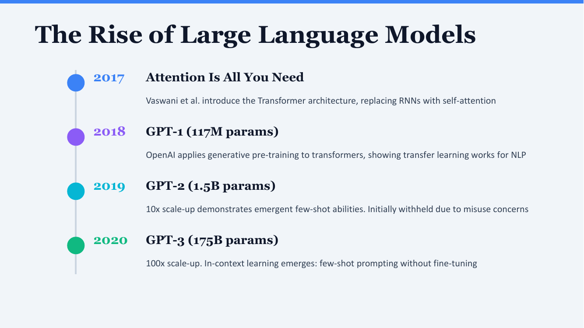
Slide 给出 2017–2020 四个关键年份：
这条时间线的核心信息：从 GPT-1 到 GPT-3，架构没本质变化，主要是规模放大。这就是后面 slide 19 要讲的 scaling hypothesis 的实证基础。
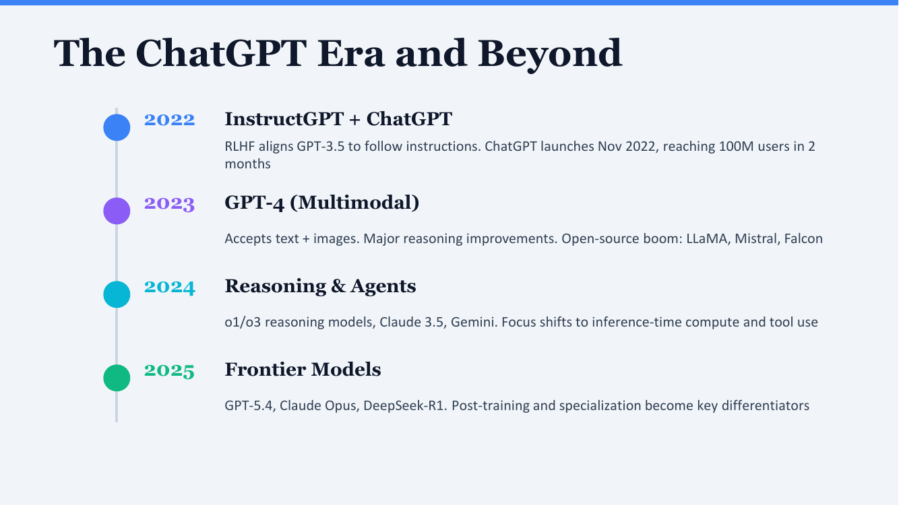
把这页和 slide 17 连起来看：2017–2020 是规模驱动，2022–2025 是对齐 + 推理 + 专精驱动。这两条主线决定了当前 LLM 工程的工作分配——pre-training 已经很标准化，post-training 是创新空间。
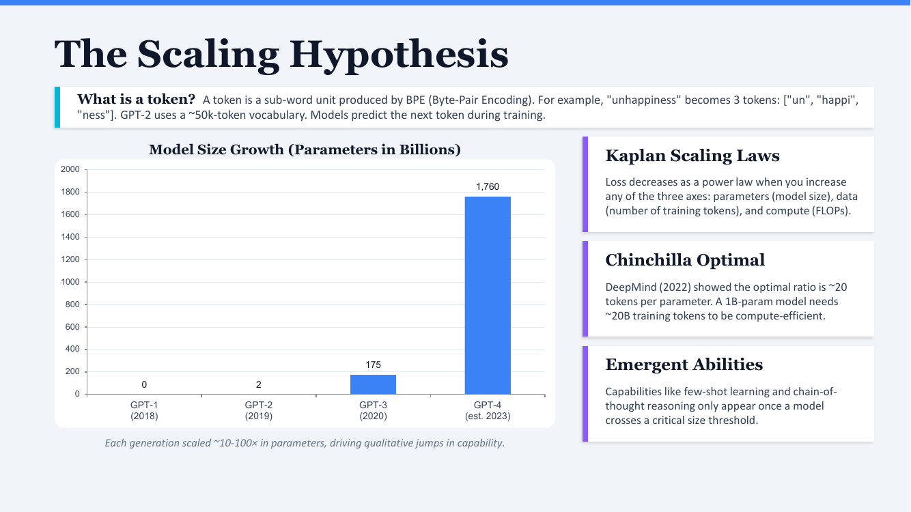
Slide 顶上先解释 token：一个 token 是 BPE（Byte-Pair Encoding）切出来的子词单元。例子："unhappiness" 被切成 ["un", "happi", "ness"] 三个 token。GPT-2 用约 50k 大小的 token 词表。模型训练的目标就是预测下一个 token——不是字符、不是单词，而是这种子词单元。BPE 的好处是平衡了"词表大小"和"覆盖率"：如果只用单词会有 OOV（未登录词）问题，如果只用字符序列长度会爆炸；BPE 把常见词整体编码、罕见词拆成片段，达到折衷。
柱状图显示 GPT-1 (~0.117B)、GPT-2 (1.5B)、GPT-3 (175B)、GPT-4 (估计 ~1.76T) 的参数规模。每代基本是上一代的 10×–100×——这种"指数级增长"不是巧合，背后是下面三条经验规律。
Kaplan 等人发现：训练 loss = 参数量 / 训练 token 数 / 算力（FLOPs）三个轴的幂律函数。三个轴中任意一个增加，loss 都按幂律下降。这意味着"投入更多资源"几乎总能换来更好的模型——这是当年 OpenAI 敢一路放大规模的理论支撑。
DeepMind 2022 年的 Chinchilla 论文给出了更精细的结论：给定固定算力预算，最优配比是约 20 token / 参数。例子：1B 参数模型最好用 ~20B token 训练；如果只用 5B token，参数白白浪费；如果用 100B token，训练成本被低估。GPT-3 在这个意义上其实是"训练不充分"的——参数太多、数据太少，所以后续很多团队（包括 LLaMA）选择更小参数 + 更多数据的配置。
有些能力（few-shot learning、chain-of-thought reasoning）必须模型规模跨过某个临界值才会突然出现——小模型完全做不到，规模过线后突然就行了。这意味着如果你用 1B 模型测某个能力发现"做不到"，不能直接外推到"100B 也做不到"，能力可能是非线性涌现的。这条规律也是当前还坚持往大里做的动机之一。
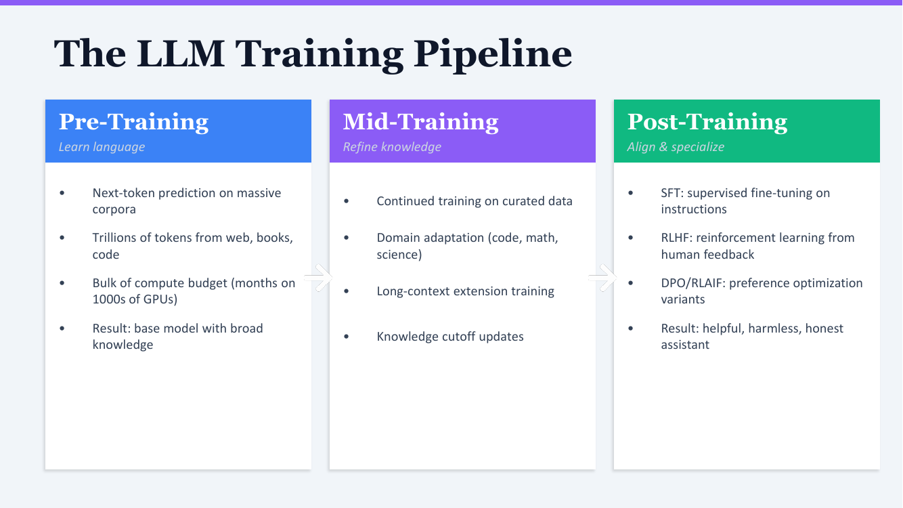
目标：让模型从零学会"语言长什么样"。手段：在海量语料上做 next-token prediction——给前面的 token 序列，预测下一个 token。
目标：在 base model 之上，用更高质量、更针对性的数据继续训练。这一阶段近两年才被分出来作为独立的阶段，过去常被并入 pre-training。
目标：把模型变成"helpful, harmless, honest" 的助理。这一阶段是当前 LLM 公司差异化的关键。
三阶段的资源投入比例大致是 pre-training 占 90%+、mid + post 占剩下的——但 post-training 的效果差异往往决定了用户感受到的"模型好不好用"。
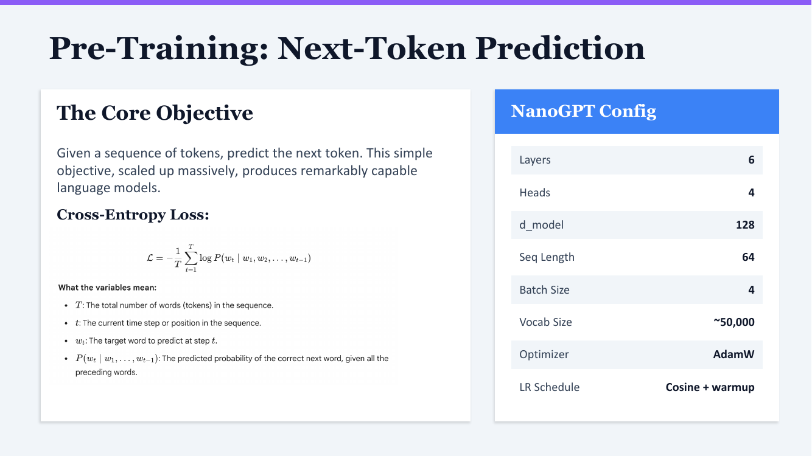
给定一个 token 序列 w_1, w_2, ..., w_{t-1}，预测下一个 token w_t。这个目标极其简单，但放大到万亿 token + 千亿参数后，就"涌现"出看起来像理解、推理的能力。这就是 LLM 的全部秘密——没有更复杂的辅助任务，只有这一条目标。
公式各部分含义：
直观理解：如果模型把正确答案的概率给得越高，−log 越小，loss 越小。整个公式就是把每个位置的 −log P 平均起来。训练就是不断推高每个 token 位置上"正确答案的概率"。
NanoGPT-2050 用的超参，对应 slide 10 白板上的字母：
| 参数 | 值 | 含义 |
|---|---|---|
| Layers | 6 | Transformer block 数 |
| Heads | 4 | 多头注意力的头数 |
| d_model | 128 | 每个 token 的 embedding 维度（白板里的 C） |
| Seq Length | 64 | 每次喂给模型的序列长度（T） |
| Batch Size | 4 | 每个 batch 里的序列数（B） |
| Vocab Size | ~50,000 | BPE 词表大小（V） |
| Optimizer | AdamW | Adam + weight decay 解耦版 |
| LR Schedule | Cosine + warmup | 开始 warmup 升温，然后余弦下降 |
这是一个玩具规模的 GPT——总参数量大约 1–2M，跟 GPT-2 的 1.5B 差 1000 倍。但它在结构上完全和真 GPT 一样，所以适合用来教学和并行化练习。
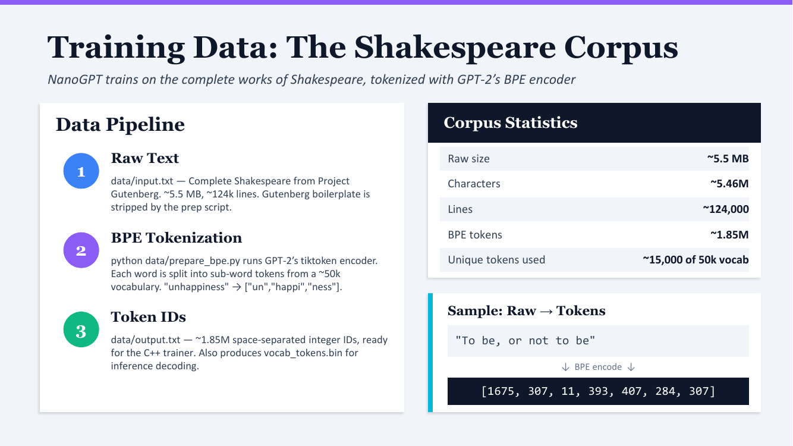
NanoGPT 用莎士比亚全集作为训练语料——5.5 MB 原始文本、约 124,000 行、5.46M 字符。这个规模在玩具尺度下很合适：单台机器内存能装下，但又比 "hello world" 大得多，能让模型学到真实的语法 / 韵律 / 上下文模式。
data/input.txt 是 Project Gutenberg 下载的莎士比亚全集，预处理脚本已经把版权声明等 boilerplate 去掉。python data/prepare_bpe.py，调用 GPT-2 的 tiktoken 编码器，把文字切成 ~50k 词表里的子词。"unhappiness" → ["un", "happi", "ness"]。data/output.txt——约 1.85M 个空格分隔的整数 ID，这是 C++ trainer 直接读的格式。还会输出 vocab_tokens.bin，推理时用来把 ID 反解码回文字。右下角小框：原文 "To be, or not to be" 经 BPE 编码后变成 [1675, 307, 11, 393, 407, 284, 307]——7 个整数。注意逗号也是一个独立 token (11)。模型看到的不是字符串，而是这串整数；训练就是让它学会"看到 [1675, 307, 11, 393, 407, 284]，下一个应该是 307 (be) 而不是别的"。
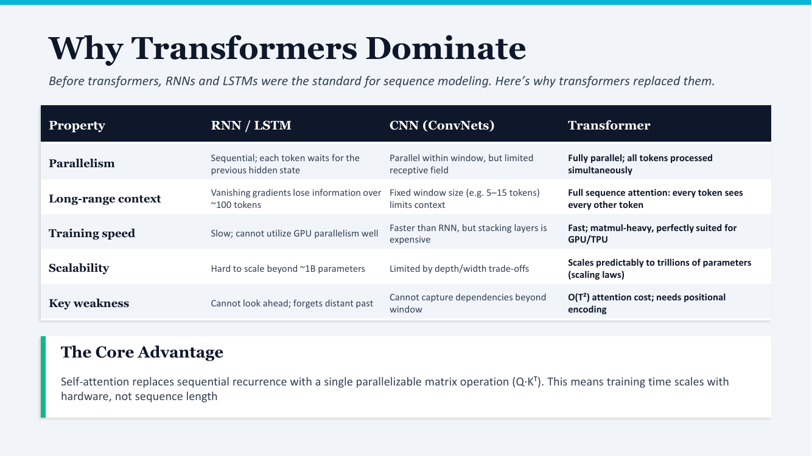
2017 年之前序列建模主要用 RNN（包括 LSTM、GRU）：每个 token 等前一个 token 的隐状态算完，才能开始算自己的——本质串行。CNN 也用过但局限于"窗口"内的局部依赖。
| 维度 | RNN / LSTM | CNN | Transformer |
|---|---|---|---|
| 并行性 | 串行；每个 token 等前一个 | 窗口内并行，但范围有限 | 全并行；所有 token 同时处理 |
| 长程依赖 | 梯度消失，~100 token 后丢信息 | 窗口固定（5–15 token） | 每个 token 看到所有 token |
| 训练速度 | 慢；GPU 利用率低 | 比 RNN 快，但堆深贵 | 快；都是矩阵乘，GPU/TPU 友好 |
| 可扩展性 | 难超过 ~1B 参数 | 受限于深度 / 宽度权衡 | 可预测地扩到万亿参数（scaling laws） |
| 主要弱点 | 不能向后看；忘记远端 | 跨窗口的依赖抓不到 | O(T²) attention 成本；需要位置编码 |
RNN 之所以慢是因为它的递推 h_t = f(h_{t-1}, x_t) 本质串行——h_t 必须等 h_{t-1}。Self-attention 用 softmax(Q · K^T / √d_k) · V 一次性把所有位置之间的关系算出来——这是一个矩阵乘，可以完全并行。结果：训练时间随硬件扩展，而不是随序列长度线性增长。这是为什么 Transformer 能做到大规模训练。
Transformer 的弱点是 attention 的复杂度是序列长度 T 的平方——序列长度翻倍，attention 计算量变 4 倍。这就是为什么"长上下文模型"（比如 1M token context）特别贵，催生了 Flash Attention、Sliding Window Attention 等优化。这里只是提一下，NanoGPT 的 T=64 远没到这个瓶颈。
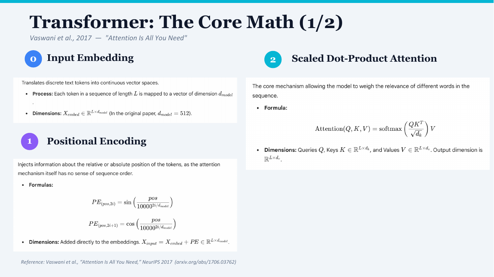
输入是离散的 token ID（一串整数），但模型需要连续向量。Embedding 层是一个 [V, d_model] 的查找表：每个 token ID 对应表里一行，行向量就是这个 token 的 d_model 维表示。原论文用 d_model = 512，NanoGPT 用 128。整个序列 embedding 后形状是 [L, d_model]（L = 序列长度）。
问题：self-attention 是对称的——它对所有 token 一视同仁，不知道谁先谁后。所以必须额外注入"位置信息"。原论文用正余弦位置编码：
每个位置 pos 得到一个 d_model 维向量，不同维度用不同频率的 sin/cos——低维高频、高维低频。这样设计的好处：(1) 训练时没见过的位置也能直接生成编码（公式型，不是查表）；(2) 相对位置可以通过线性变换提取出来——sin(a+b) = sin(a)cos(b) + cos(a)sin(b)。
用法：直接加到 embedding 上：X_input = X_embed + PE。形状还是 [L, d_model]。
NanoGPT 实际用的是可学习位置编码（learned position embedding，多一张 [seq_len, d_model] 表，和 token embedding 一样查），但思想是一样的——给每个位置一个独立的向量。
公式分解：
[L, d_k]。[L, d_k]。[L, d_v]。[L, L] 的注意力分数矩阵——位置 i 对位置 j 的关注度。直观理解："每个 token 通过和所有 token 比较，决定自己最终的表示由哪些 token 加权得到"。这是 self-attention 的全部内容——后面的 multi-head、masked、cross-attention 都是这个公式的变体。
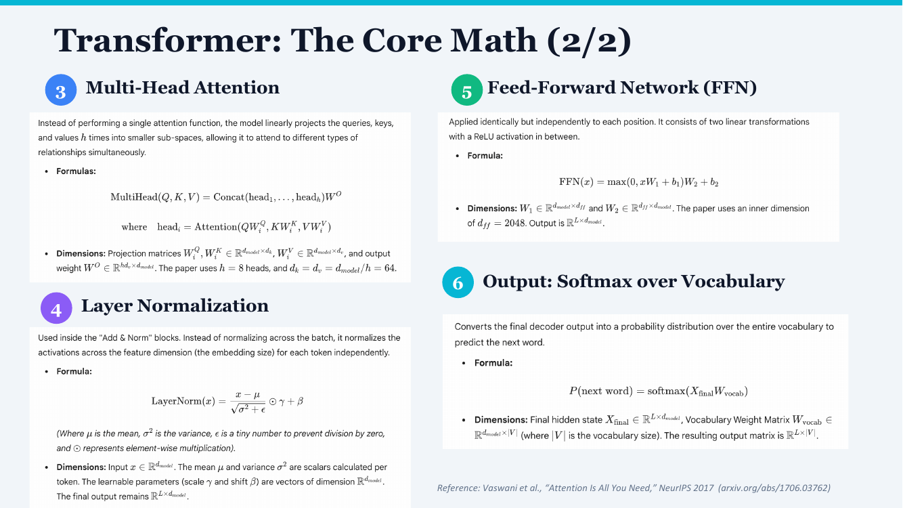
问题：单个 attention 只能学一种"关系"。多头让模型同时学多种不同的关系——比如一个头关注语法依赖、另一个关注语义相似度。
做法：把 d_model 维度切成 h 份（NanoGPT 用 h=4），每份单独跑一次 attention，结果拼回来再过一次线性层 W^O。原论文用 h=8、d_k = d_v = 512/8 = 64。关键：参数量没增加——总维度还是 d_model，只是切成 h 份。
对每个 token 独立沿 feature 维度（embedding 维度）做归一化。注意：和 BatchNorm 不同——BatchNorm 沿 batch 维度归一化，依赖 batch 内其他样本；LayerNorm 不依赖 batch，每个样本自治。这点对 LLM 特别重要：(1) 推理时 batch 可能为 1，BatchNorm 会有问题；(2) batch 间数据分布差异大时 LayerNorm 更稳定。
γ 和 β 是可学习的缩放和偏移参数，让模型还能调整归一化后的尺度——避免硬归一化损失表达能力。ε 是防止除零的小常数。
对每个位置独立跑一个两层全连接网络：先升维到 d_ff（原论文 2048，NanoGPT 4·d_model = 512），过 ReLU，再降回 d_model。注意"独立"——FFN 不在位置之间通信，所有跨位置的信息融合都在 attention 里完成。FFN 的作用是给每个位置一个非线性变换的"机会"。
FLOP 上 FFN 是大头——升维 + 降维两次大 matmul，每层占整个模型 2/3 左右的 FLOPs（slide 39 会详细算）。这就是为什么后面 GPU 加速主要瞄准 FFN。
最后一层 LayerNorm 后的隐状态 [L, d_model] 经过一个 [d_model, V] 的输出投影 → [L, V] 的 logits → softmax 转成每个位置上 V 个 token 的概率分布。注意：W_vocab 通常和 input embedding 共享权重（weight tying）——可以省一半参数，效果上也更稳定。NanoGPT 也用了 weight tying（slide 28 第 8 步会再提）。
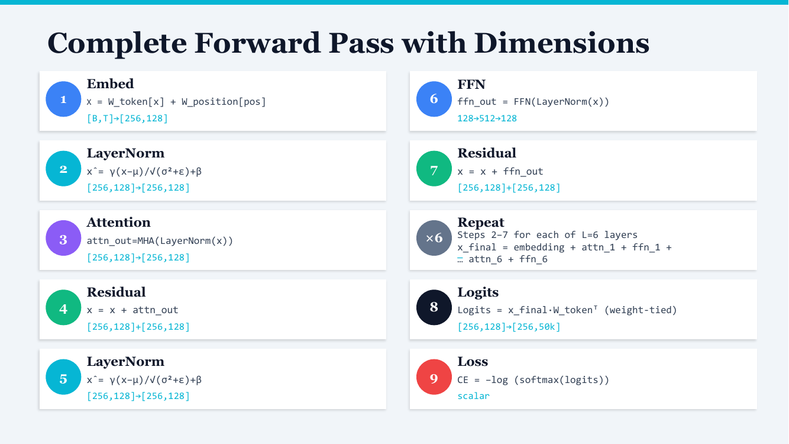
NanoGPT 一次前向传播。下面用 [B, T] = [4, 64]（B=4 batch、T=64 序列长度）、d_model = 128、V = 50k。注意 slide 把 batch 维度收进 256 = 4×64（先扁平化看）。
x = W_token[ids] + W_position[pos]。Token id 查表得到 token embedding，加上位置 embedding。形状 [B, T] → [256, 128]。x̂ = γ(x − μ)/√(σ² + ε) + β。沿最后一维（128）归一化。形状不变 [256, 128]。attn_out = MHA(LayerNorm(x))。注意这里是 Pre-LN 风格——LayerNorm 在 attention 前面（GPT-2 之后的标准做法）。形状 [256, 128]。x = x + attn_out。残差连接——把 attention 的输出加回原始 x 上。关键：这让深层网络能训练，因为梯度可以直接通过残差跳过 attention 反传。ffn_out = FFN(LayerNorm(x))。维度变化 128 → 512 → 128（升 4 倍再降回来）。x = x + ffn_out。第二个残差。Logits = x_final · W_token^T（weight-tied——和输入 embedding 共享权重）。形状 [256, 128] → [256, 50k]。CE = −log(softmax(logits))，对正确 target token 取 −log。最终是一个 scalar。Pre-LN vs Post-LN：原论文是 Post-LN（LayerNorm 放在残差加完之后），后来发现 Pre-LN（LayerNorm 在子层之前、残差直通）训练更稳定。NanoGPT 跟随 GPT-2 用 Pre-LN——这就是为什么步骤是 LN→Attn→Residual 而不是 Attn→Residual→LN。
Weight tying：步骤 8 用 W_token^T 而不是独立的 W_output——输入 embedding 和输出投影共享权重，省掉 50k × 128 ≈ 6.4M 个参数。
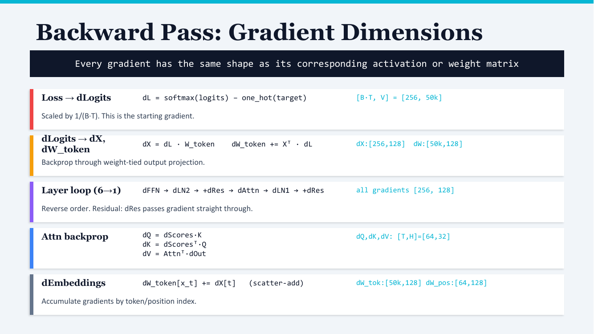
顶上一句话总结：每个梯度的形状和它对应的激活 / 权重矩阵完全相同。这是反向传播的常识——dx 和 x 一样大、dW 和 W 一样大。所以"形状对齐"是 debug 反传代码的第一招。
Cross-entropy + softmax 的反传意外简单——不需要单独算 softmax 的雅可比，组合后直接是"预测概率减去真实 one-hot"。形状 [B·T, V] = [256, 50k]。再除以 1/(B·T) 做平均。这是反传的起点。
反传到 weight-tied 输出投影。关键 "+=" 而不是 "="——因为 W_token 在正向被用了两次（input embedding 一次、output projection 一次），反传梯度要加两边贡献，不是覆盖。形状：dX [256, 128]、dW [50k, 128]。
反着穿过 6 层。每层内部顺序是：dFFN → dLN2 → +dRes → dAttn → dLN1 → +dRes。残差的反传是直通——dRes 直接复制一份给残差输入，不做任何变换（因为 y = x + f(x)，∂y/∂x = 1）。所有这些梯度的形状都是 [256, 128]。
注意力的反传按链式法则展开。dQ、dK、dV 的形状都是 [T, H] = [64, 32]（H = d_model / n_heads = 128/4 = 32）。这是 slide 11 白板上 "8 matmuls" 那一块的具体内容——每个矩阵乘的反传都是两个 matmul（一个算 grad input，一个算 grad weight）。
Embedding 层的反传是稀疏的 scatter-add——不是矩阵乘。原因：embedding 正向是查表（gather），反向就是按 token id 把 dX 散加（scatter-add）回 W_token 表的对应行。同一个 token 在序列里出现多次时，梯度要累加——所以是 +=。形状：dW_tok [50k, 128]、dW_pos [64, 128]。
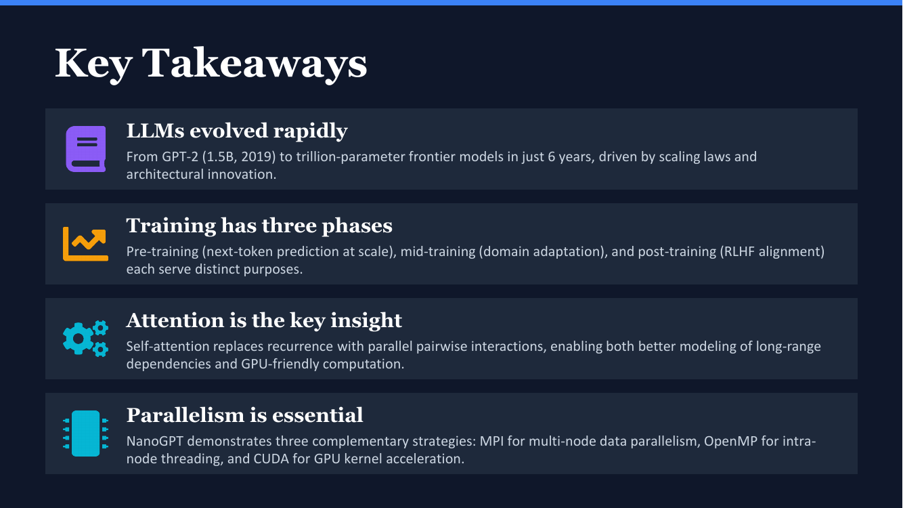
这页是把 LLM 部分（章节 01–03）总结成 4 个口袋里的 takeaway，并桥接到剩下的 parallelization 部分（章节 04）。
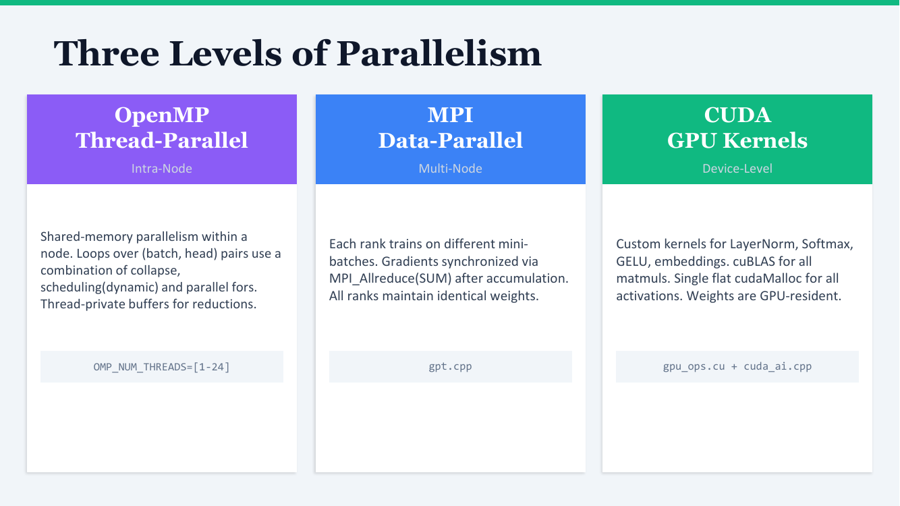
共享内存并行——一个进程内开多个线程，跑在同一节点的多核 CPU 上。NanoGPT 用 OpenMP 并行化的对象是嵌套循环——比如 (batch, head) 这种二维 loop 用 #pragma omp parallel for collapse(2) 摊平成一维并行；attention 的 Q·K^T 用 schedule(dynamic) 因为不同 head 的工作量可能不均；reduction 用 thread-private buffer 防止 race。环境变量 OMP_NUM_THREADS 控制开几条线程，NanoGPT 测试用 1–24。
消息传递并行——每个节点跑一个独立进程（rank），各自有独立内存，靠显式发消息通信。在 NanoGPT 里：每个 rank 拿不同的 mini-batch 训练，反传后用 MPI_Allreduce(SUM) 同步梯度——所有 rank 加起来除以 rank 数，然后每个 rank 都用同样的平均梯度更新权重。结果：所有 rank 的权重永远保持一致，但每步看的数据是 N 倍。代码在 gpt.cpp。
GPU 加速——把核心计算搬到 GPU 上跑。NanoGPT 自己写了一些 CUDA kernel：LayerNorm、Softmax、GELU、Embedding；矩阵乘（最重的那部分）直接调 cuBLAS。所有激活用一次大的 cudaMalloc 一次性分配出来（避免反复 malloc/free），权重常驻 GPU。代码在 gpu_ops.cu + cuda_ai.cpp。
实际跑可以组合：4 节点 × 24 线程 = MPI 4×24——每个节点一个 MPI rank、每 rank 内 24 个 OpenMP 线程；如果有 GPU，再把核心 kernel 卸载到 CUDA。这就是 HPC 项目的标准三层架构：节点间靠 MPI、节点内靠 OpenMP、单设备内靠 CUDA。
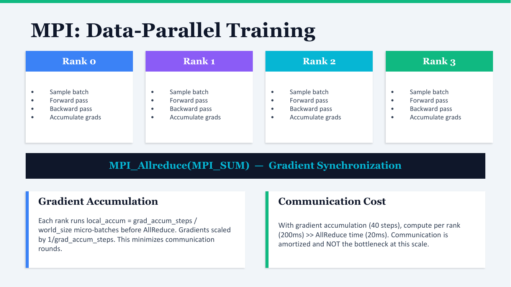
Slide 画了 4 个 rank（0–3），每个 rank 都做：
然后下面一个大箭头：MPI_Allreduce(MPI_SUM) —— 把所有 rank 的梯度求和，结果广播回所有 rank。这一步是 data-parallel 的核心同步点。
每个 rank 不是每 forward-backward 一次就 AllReduce 一次，而是本地累积 grad_accum_steps / world_size 次微批之后再做一次 AllReduce。NanoGPT 设的 grad_accum = 40，4 个 rank 就是每个 rank 累积 10 次。梯度最后除以 grad_accum_steps 做平均。这是为了把多次小的通信合并成一次大的——网络通信的固定开销（建立连接、握手）摊到更多计算上。
Slide 给出实测：每 rank 计算约 200ms，AllReduce 约 20ms——通信只占总时间 10%。换句话说，对于这个规模的模型，gradient sync 不是瓶颈。这条结论只在小模型成立——真实 LLM（百亿参数）训练时 AllReduce 会变得显著，需要更复杂的优化（gradient bucketing、overlap with backprop 等）。
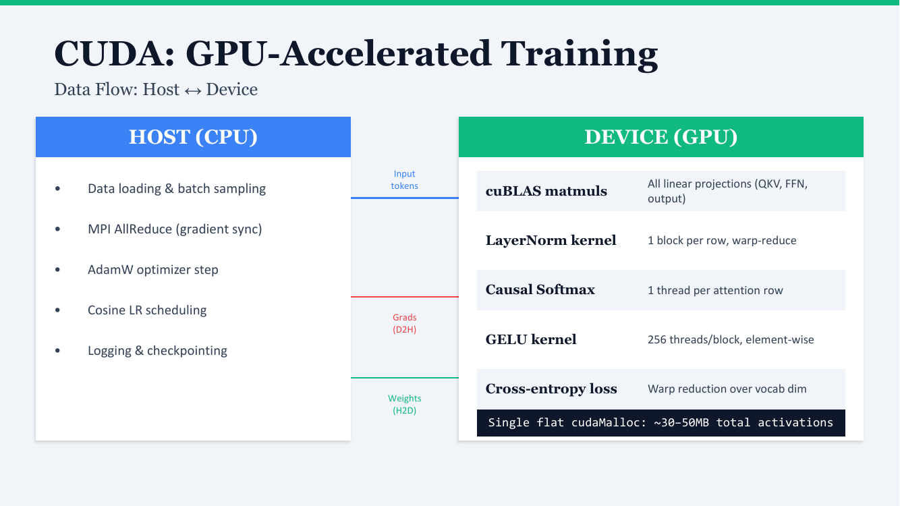
Slide 中间的颜色标签：Input tokens 从 CPU 传到 GPU（每步一次）；Grads 从 GPU 传回 CPU（D2H，做 MPI AllReduce）；Weights 从 CPU 传到 GPU（H2D，权重常驻 GPU 不需要每步重传，只在初始化和 optimizer step 时同步）。
底部黑框：所有激活用一次 cudaMalloc 分配出 30–50 MB 总池，每个张量在池里取一段。这避免了训练循环里反复 malloc/free（GPU 上 malloc 比 CPU 慢得多），也降低了内存碎片。这是 HPC 风格的 GPU 编程惯例——预分配，自管。
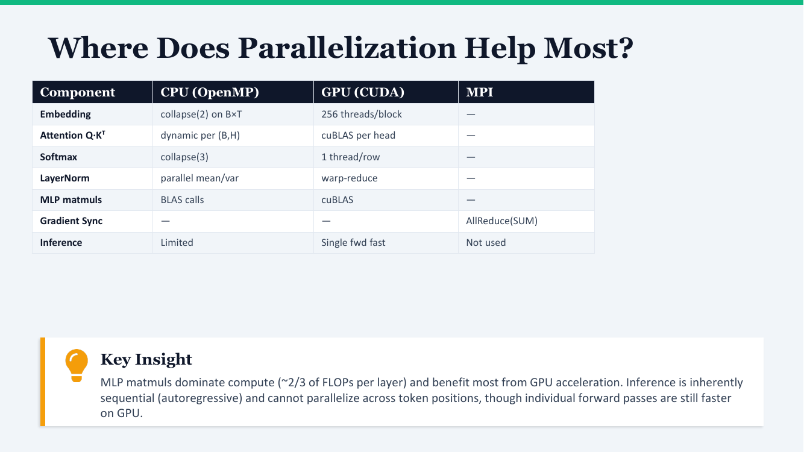
| 组件 | OpenMP | CUDA | MPI |
|---|---|---|---|
| Embedding | collapse(2) on B×T | 256 threads/block | — |
| Attention Q·K^T | dynamic per (B, H) | cuBLAS per head | — |
| Softmax | collapse(3) | 1 thread/row | — |
| LayerNorm | parallel mean/var | warp-reduce | — |
| MLP matmuls | BLAS calls | cuBLAS | — |
| Gradient Sync | — | — | AllReduce(SUM) |
| Inference | 有限 | 单次 forward 快 | 不用 |
这就是为什么 GPU 加速最划算——MLP 升维 + 降维两个大 matmul 是绝对热点，cuBLAS 直接吊打 CPU 实现。Slide 39 会给出具体的 FLOP 数字。
训练时所有 token 同时算（一次处理整个序列），推理时是自回归——必须先生成 token N，才能用它当输入生成 token N+1。这种依赖让token 之间不能并行。GPU 还是比 CPU 快很多（单次 forward 快），但加速比远不如训练时。这就是为什么 MPI 在推理时基本不用——AllReduce 没有梯度可同步，token 之间又串行，没法 data-parallel。
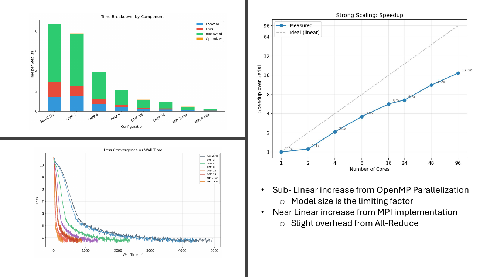
柱状图按配置（Serial / OMP 2 / 4 / 8 / 16 / 24 / MPI 2×24 / MPI 4×24）显示每步耗时，分成 Forward / Loss / Backward / Optimizer 四块。Backward 是最大块（绿色）——因为它的计算量大约是 forward 的 2 倍（每个 matmul 反传需要两个 matmul）。从 Serial 的 ~9s 一直降到 MPI 4×24 的 ~0.3s。
横轴核数 1→96，纵轴 speedup。蓝线是实测，灰虚线是理想线性扩展。
OpenMP 部分亚线性——模型规模太小，线程多了之后每线程的工作量变小，并行开销吃掉收益。MPI 部分接近线性——每加一个节点，每节点工作量不变，AllReduce 开销小，所以扩展性好。这印证了 slide 35 的结论："通信不是瓶颈"。
不同配置的 loss 下降速度对比。所有曲线最终都收敛到差不多的 loss（约 4），但 MPI 配置（红线）最先到达。这是 data-parallel 的本质——它不会改变每个梯度更新的方向（梯度是平均的，相当于更大 batch），但单位时间内能做更多更新，所以 wall time 短。
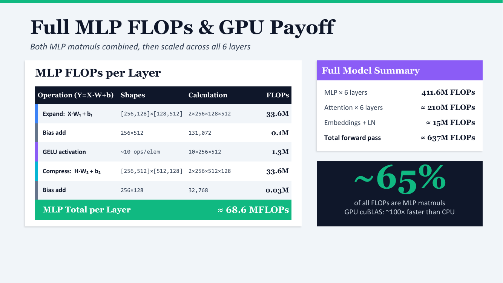
左侧表格按 NanoGPT 形状（B·T = 256, d_model = 128, d_ff = 512）算每个运算的 FLOP：
| 运算 | 形状 | 计算 | FLOPs |
|---|---|---|---|
| Expand: X·W_1 + b_1 | [256,128]×[128,512] | 2·256·128·512 | 33.6M |
| Bias add | 256×512 | 131,072 | 0.1M |
| GELU activation | ~10 ops/elem | 10·256·512 | 1.3M |
| Compress: H·W_2 + b_2 | [256,512]×[512,128] | 2·256·512·128 | 33.6M |
| Bias add | 256×128 | 32,768 | 0.03M |
| MLP Total per Layer | ≈ 68.6 MFLOPs | ||
关键"matmul FLOPs = 2 × N × M × K"——一个 [N×K] × [K×M] 的矩阵乘是 2NMK FLOP（每个输出元素 K 次乘 + K 次加 = 2K）。两个 matmul（升维 + 降维）形状对称、FLOP 也对称各 33.6M。激活和偏置比起来微不足道。
这就是为什么 GPU 加速主要瞄 MLP——cuBLAS 在大 matmul 上能比 CPU 快 100×。所以"GPU 友好"不只是因为它有大量核心，更是因为真实负载里 matmul 占比足够大，能填满 GPU 的吞吐。如果一个工作负载里 matmul 只占 5%，搬 GPU 没意义（slide 9 提过那个 "sufficient workload" 的概念）。